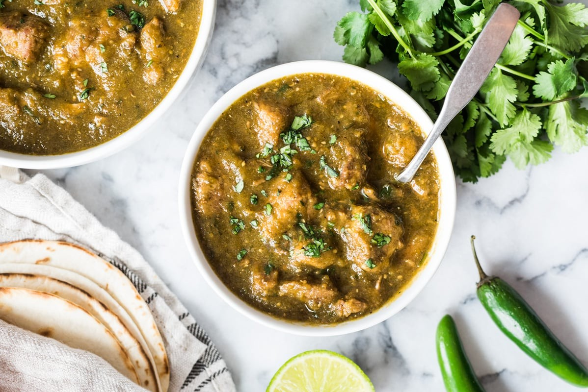

Back to Home
Carne Con Chile

Carne con chile is a very traditional, authentic dish that is commonly served across households in the hispanophone world.
Together, we will go through all of the ingredients needed to create this meal. If you are not used to making hispanic recipes,
keep in mind that this dish is going to be spicy, so get ready to use a hose on your tongue!
Ingredients
For the salsa
- Tomatoes
- Chiles serranos/perones/habaneros/de arbol/etc.
- Garlic
- Green tomatillos
Else
- Meat
- Salt and pepper
Directions/Steps
- Prep the mean, season and cook
- Boil the salsa ingredients and then put in a blender
- Blend them and add salt, be liberal
- Once meat is cooked, pour the salsa and let it boil
- Enjoy!